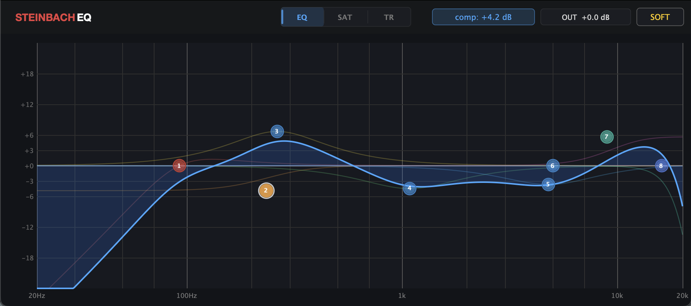
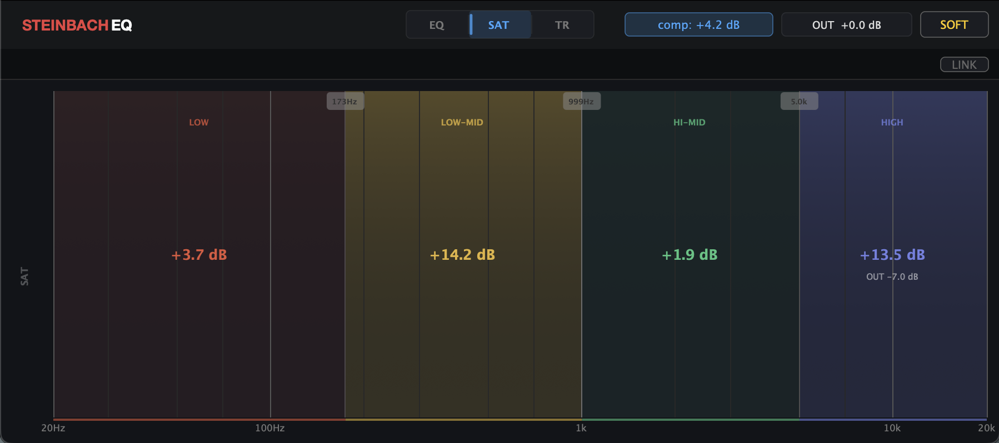
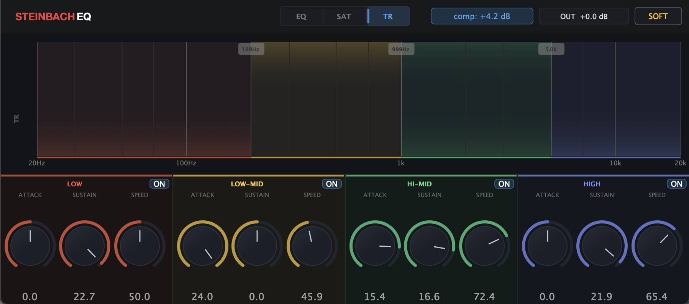

EQ, multiband saturation, and multiband transient shaping in one plugin. Shape your sound with precision, add analogue character, and control transients per frequency band.
AU · VST3 · macOS · One-time payment · Free updates
All three modules run simultaneously at all times. The panel switcher changes only what is displayed, not what is processing. Every session uses all three.
Sculpt tone & frequency balance
Add analogue harmonic character
Control attack and sustain, per band
Soft or hard limiter at −1 dBFS

Make bold cuts and boosts without losing your loudness reference. Auto Gain compensates the output automatically, so what you hear is the actual tonal change, not a louder version convincing you it sounds better.

Saturate the low-mids for warmth without muddying the highs. Drive the presence range for bite without touching the bass. Independent saturation per band means you only add harmonic content exactly where you want it.

A dual-envelope follower detects attack and sustain phases in real time. Boost the attack to add punch or reduce it to tame harshness. Extend the sustain for presence or cut it to tighten a mix. All of this per band, without touching the EQ.
From raw tracks to finished result, Steinbach EQ on a full mix session.
29 €
One-time payment · Free updates · via Patreon